⚡ CPU - Central Processing Unit
The CPU, or Central Processing Unit, is the brain of the computer. It executes instructions from programs, performs calculations, and manages data flow between components. The CPU's performance is determined by its core count, thread count, clock speed, and cache size.
Cores are individual processing units within the CPU. Threads allow each core to handle multiple tasks simultaneously. Clock speed (measured in GHz) determines how fast instructions are processed. Cache is ultra-fast memory built into the CPU for quick data access.
Entry Level
Purpose: Basic computing, web browsing, office work
Entry-level CPUs are designed for budget-conscious users who need basic computing performance. They handle everyday tasks like web browsing, word processing, and light multitasking efficiently.
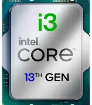
/span>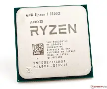
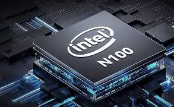

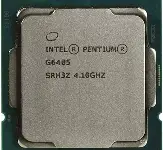
Typical Specifications
| Cores | 2-4 cores |
|---|---|
| Threads | 4-8 threads |
| Base Clock | 2.5 - 3.5 GHz |
| Boost Clock | 3.5 - 4.5 GHz |
| Cache | 6-12 MB |
| TDP | 35-65W |
| Target Users | Students, office workers, budget builders |
| Advantages | Affordable, power efficient, good for basic tasks |
| Limitations | Limited multitasking, slower for heavy workloads |
Mid Range
Purpose: Gaming, content creation, multitasking
Mid-range CPUs offer an excellent balance of performance and value. They handle modern games, photo editing, video streaming, and multitasking with ease. These are the most popular CPUs for mainstream users.
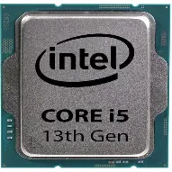
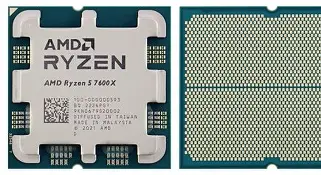

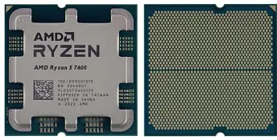
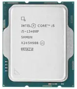
| Cores | 6-10 cores |
|---|---|
| Threads | 12-20 threads |
| Base Clock | 3.0 - 4.0 GHz |
| Boost Clock | 4.5 - 5.2 GHz |
| Cache | 20-30 MB |
| TDP | 65-125W |
| Target Users | Gamers, content creators, professionals |
| Advantages | Great value, handles gaming and productivity |
| Limitations | May struggle with heavy rendering workloads |
High End
Purpose: High-performance gaming, streaming, rendering
High-end CPUs deliver exceptional performance for demanding workloads. They excel at gaming, 4K video editing, 3D rendering, and heavy multitasking. These CPUs are for enthusiasts who need top-tier performance.
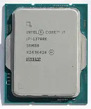
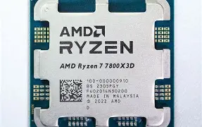
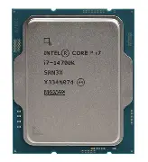
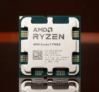
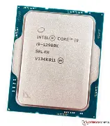
| Cores | 12-16 cores |
|---|---|
| Threads | 20-32 threads |
| Base Clock | 3.5 - 4.2 GHz |
| Boost Clock | 5.0 - 5.6 GHz |
| Cache | 30-40 MB |
| TDP | 125-200W |
| Target Users | Enthusiast gamers, creators, streamers |
| Advantages | Excellent performance, handles demanding workloads |
| Limitations | Expensive, requires strong cooling |
Enthusiast
Purpose: Extreme performance, heavy workloads, professional use
Enthusiast-class CPUs are the pinnacle of performance. They're designed for professional workloads, extreme gaming, 8K video editing, AI training, and scientific computing. These CPUs offer the highest core counts and performance available.
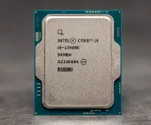
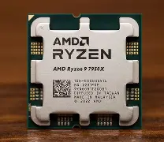
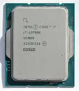
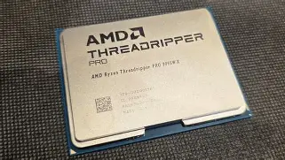
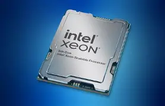
| Cores | 16-64+ cores |
|---|---|
| Threads | 32-128+ threads |
| Base Clock | 3.0 - 4.0 GHz |
| Boost Clock | 4.5 - 5.8 GHz |
| Cache | 40-100+ MB |
| TDP | 200-400+ W |
| Target Users | Professionals, creators, extreme enthusiasts |
| Advantages | Maximum performance, handles any workload |
| Limitations | Very expensive, requires premium cooling |